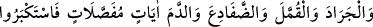

FİRAVUN VE KAVMİNİN
CEZALANDIRILMASI
130. Andolsun ki, biz de Firavun’a uyanları ders alsınlar diye yıllarca kuraklık ve
mahsül kıtlığı ile cezalandırdık.
131. Onlara bir iyilik (bolluk) gelince, “Bu bizim hakkımızdır” derler; eğer
kendilerine bir fenalık gelirse Musa ve onunla beraber olanları uğursuz sayarlardı.
Bilesiniz ki, onlara gelen uğursuzluk Allah katındandır, fakat onların çoğu bunu
bilmezler.
132. Ve dediler ki: “Bizi sihirlemek için ne mucize getirirsen getir, biz sana
inanacak değiliz.”
133. Biz de ayrı ayrı mucizeler olarak onların üzerine tufan, çekirge, haşere,
kurbağalar ve kan gönderdik; yine de büyüklük tasladılar ve günahkâr bir kavim
oldular.
134. Azap üzerlerine çökünce, “Ey Musa! sana verdiği söz hürmetine, bizim için
Rabbine dua et; eğer bizden azabı kaldırırsan, mutlaka sana inanacağız ve
muhakkak İsrailoğullarını seninle göndereceğiz” dediler.
“Andolsun biz, Firavun ailesini,” yani, onun kavmini ve onun dindaşlarını, demektir.
Bir kimsenin “ ” (âilesi), kendileriyle yakın ilişki içinde bulunduğu yakın çevresidir.
“öğüt alsınlar diye yıllarca kıtlıkla ve ürünlerini azaltmakla cezalandırdık.” “
” (yıllarca) kelimesi, yıl mânâsına gelen “
” kelimesinin çoğuludur. Fakat daha çok
kıtlık yılları için kullanıldığı için sanki onun özel ismi olmuştur. “Necm” kelimesi,
yıldız mânâsında olduğu halde çoğunlukla Süreyya yıldızı için kullanıldığı gibi.
Allah Teâlâ, öğüt alıp; başlarına gelenlerin işledikleri günahlar sebebiyle olduğunu